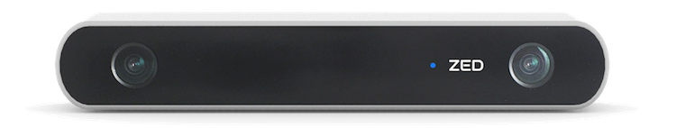

Camera Sensor
Hardware
Each car has a ZED stereo camera. It can output a standard video stream, or it can output a depth estimate stream.

Specs
- Wiring:
- Sends data and receives power via USB
- Data:
- Frames per second & resolution: 60fps @ 720p
- Field of view: 110°
- Depth range: 0.5 - 20 m
- Can calculate odometry based on visual data
This sensor has an MSRP of 0.5 US kilodollars. Be aware of this as you conduct your testing.
Usage in ROS
- To use the ZED's data in ROS, first run `startZED` on the car's terminal.
- Beyond that, you usually will not have to interact with ZED data directly. Rather, we will often give you programs that process the ZED’s data.
For instance, in ZED.py , the “image_converter” class takes in the raw data and converts it to CV2 format, which helps us greatly to process the image. -
For the curious though, we can get ZED data like we get other sensor data
- The ZED nodes publish different data to different topics. There are left/right camera topics and a depth topic. We often use `/zed/rgb/image_rect_color` .
- Each message is of the type `Image`.
- For a full list of `Image` message attributes, see ros.org.
How to visualize the data onscreen.
- If you're ssh-ed into the car:
- on the car's terminal (i.e. ssh-in), run `startZED`
- on the computer's terminal, run `rqt_image_view`
- select the topic you would like to view
- If you have a monitor directly plugged in:
- Run `startZEDviz` in the terminal for a totally awesome visualization in RVIZ.
- Be sure to click on "DepthCloud" for the full effect.